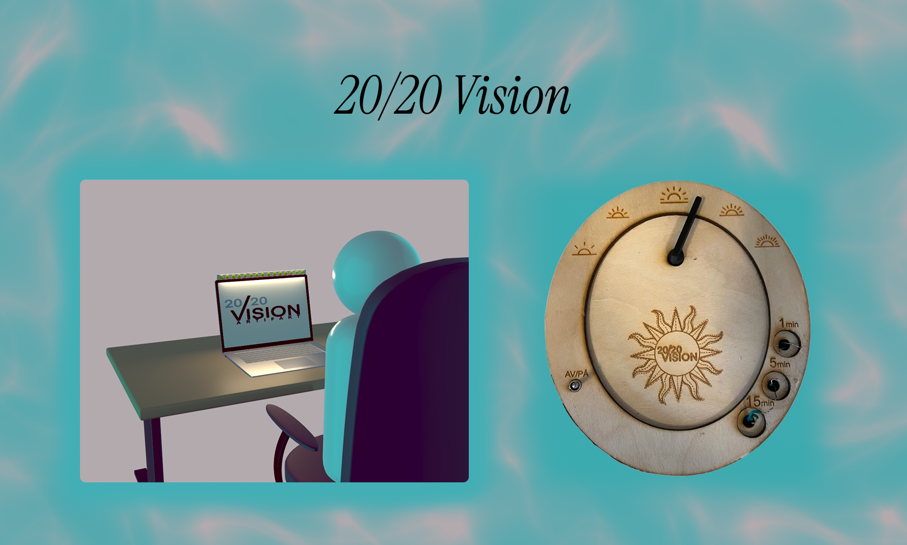
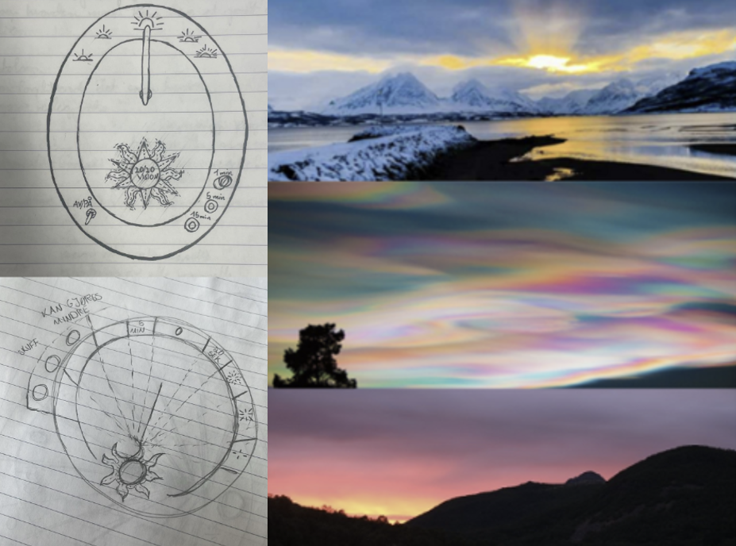
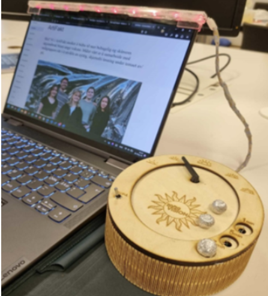
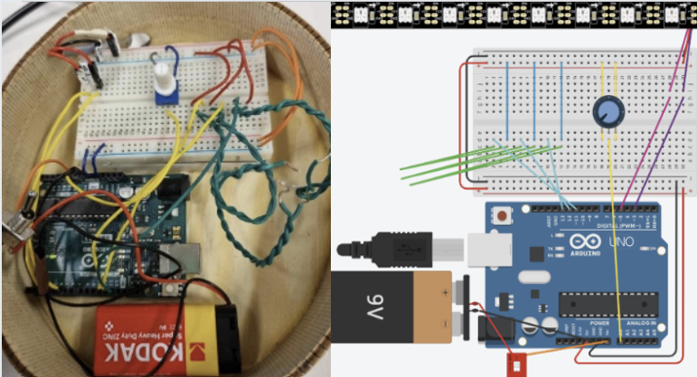

2024
20/20 Vision
En bærbar lystimer som fremmer sunnere skjermvaner gjennom fokuserte arbeidsøkter, tydelige pauser og stemningsskapende lys.
- Min rolle
- Research, design & prototyping
- Varighet
- 6 uker
- Verktøy
- Arduino, 3D-print & LED
- Kontekst
- UiO · IN1060 · 2024

01 · Problemet
Bedre pauser fra skjermen
Langvarig skjermbruk kan gi midlertidig ubehag som irriterte øyne, hodepine, sløret syn og smerter i nakke og rygg.
ArtiFakt-gruppen ønsket å utvikle en nyttig, skjermfri løsning for unge voksne som bruker skjerm til arbeid eller fritid. Utgangspunktet var bredt: avstand, lysstyrke, kontrast, og tidsintervaller kunne alle påvirke opplevelsen.
Problemstilling: Hvordan kan en fysisk artefakt gjøre gode skjermpauser lettere uten å oppleves som enda en forstyrrelse?
En domeneekspert introduserte 20/20/20-regelen: etter 20 minutter med skjerm ser brukeren i 20 sekunder på noe omtrent seks meter unna. Denne regelen ble et viktig utgangspunkt, men måtte tilpasses brukernes faktiske preferanser.
02 · Prosessen
Brukerne valgte retningen
Vi brukte kvalitative metoder gjennom hele prosessen: dybdeintervjuer, observasjon, fokusgrupper, oppgavebasert testing og en avsluttende evaluering.
To semistrukturerte intervjuer og observasjon av skjermbruk ga innsikt i holdning, skjermavstand, pausehyppighet og opplevde symptomer. Funnene ble analysert i affinitydiagrammer og tatt videre til to workshops med fokusgruppen.
I den andre workshopen presenterte vi tre lavoppløselige konsepter: en stasjonær avstandsmåler, en bærbar avstandsmåler og en lysbasert timer. Brukerne viste tydelig størst interesse for timeren. Den passet også godt til kurstemaet «av/på»: lyset slås av og på, samtidig som brukeren veksler mellom å være på og av skjermen.
Lys og tid ledet formutforskningen mot solen og soluret. Et gyllent arbeidslys, rosa og lilla kveldsfarger og en dynamisk «disco-modus» ga produktet karakter, mens den ovale formen gjorde dockingstasjonen mindre og lettere å transportere.

03 · Resultatet
En fysisk rytme for arbeid og pause
Den endelige prototypen kombinerer en LED-stripe på den bærbare datamaskinen med en kompakt dockingstasjon formet som et solur.
Arbeidsøktene varer i 20 minutter. To flyttbare kuler velger ett, fem eller femten minutters pause, som var lengder brukerne foretrakk fremfor de opprinnelige 20 sekundene. En tredje kule aktiverer dynamisk fargemodus. En spak slår systemet av og på, mens en dimmer justerer lysstyrken.

- 01LED-stripen gir synlig tilbakemelding uten å kreve en ny skjerm.
- 02Fysiske kuler gjør pausevalg konkret og lett å forstå.
- 03Arbeidslys og dynamiske farger kombinerer nytte med en mer personlig opplevelse.

Neste prosjekt